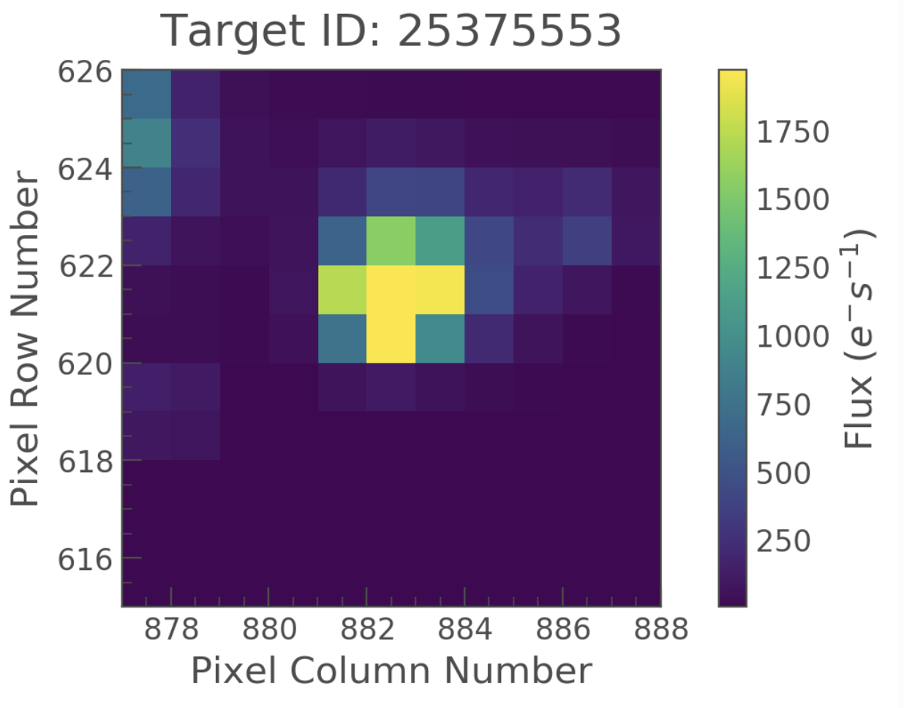

MAST tools
The official archive for TESS mission data products is the Mikulski Archive for Space Telescopes (MAST) which is hosted at the Space Telescope Science Institute (STScI).
MAST has created a Summary page with information on data access, tools, and resources for TESS data. Brief descriptions are below, but see the MAST Summary page for more details.
MAST Portal
Download light curves, target pixel, and data validation files for a few targets. Download full frame images for a few CCDs. Conduct small searches within the TIC or CTL. Find data from other missions for your target.
MAST API/astroquery
Search for, and retrieve, TESS data products programmatically based on a list of coordinates or target names. Interact with observational data, TIC, and CTL catalogs in programs you write.
exo.MAST
Find MAST data (including TESS) for known planets and TOIs, matched to orbital phase. Plot sector-stitched DV light curves. Access to exoplanet parameters with references.
TESSCut
Create time series pixel cutouts from the TESS full frame images. Find out what sectors / cameras / detectors a target was observed in. Further information can be found here.
Bulk downloads
Download all light curves / target pixel files for a given sector. Download all light curves / target pixel files for a given GI program. Download all full frame images for a given sector. Download the entire TOI or TCE table. Download the current TIC and CTL.
Archive manual
Step-by-step instructions on how to use MAST web interfaces for TESS. Get Python notebook tutorials on using TESS data and MAST tools. Access the TIC and CTL "live" release notes. Learn how to contribute TESS-related data products to MAST.
TESS data product overview
The TESS mission page at MAST contains the latest news and updates on TESS products. The following TESS data products and catalogs are currently available or will be soon through MAST:
Data products at MAST
The file types are presented in the table below. Further information on these products can be found at the MAST site.
Main data products
A variety of data products from TESS will be archived at MAST for use by the community.
Full frame images (FFIs)
A Full Frame Image (FFI) is a collection of science and collateral pixels observed simultaneously. A single FFI is the full set of all science and collateral pixels across all CCDs of a given camera. FFIs will be taken every 30 minutes during science operations.
There are 16 CCDs on the spacecraft, each of which is supported by 4 output channels. TESS FFI files are in FITS format and contain all pixels on a single CCD for a single 30 minute cadence observation. FFI data will be provided in three types: uncalibrated, calibrated, and uncertainty. Uncalibrated FFI data will be provided in one file with two Header/Data Units (HDUs): a primary header and the CCD image header and data. The calibrated image and its uncertainty will be provided in a separate file with several HDUs: a primary header, the CCD calibrated image header and data, the CCD uncertainty image header and data, and the cosmic ray corrections binary table header and data. Cosmic Ray Mitigated (CRM) FFIs are the same as FFIs except they will be collected with the onboard cosmic ray mitigation enabled.

Target pixel files (TPFs)
The target pixel files are the rawest form of target-specific data that will be available at MAST. For each 2 minute cadence target in an observing sector, TESS only acquires the pixels contained within a predefined mask. These pixels are used to create the data found in the light curve files. Each target pixel file packages these pixels as a time series of images in a binary FITS table. The intent of these files is to provide the data necessary to perform photometry on the raw or calibrated data when needed (or desired) to understand (or improve) the automated results of the TESS pipeline. In the binary table, the pixel values are encoded as images. Each element in the binary table contains the pixels from a single cadence.
A sample image from a TESS mission target pixel file is shown below:

If a target is observed in more than one sector, multiple TPFs will be created for that target but they may be made available in separate deliveries to the MAST. The images in the TPF will have dimensions equal to the bounding box of the pixels that were collected for that target. Depending on the location of the target on a CCD, a TPF may therefore contain pixels that do not contain stored data. TPFs will have several HDUs: a primary header, a binary table of images header and data, the aperture mask image header and data, and the cosmic ray correction binary table header and data. The aperture mask image provided with each TPF file indicates the pixels that were collected for the target and which of those pixels were used for photometry.
Light curve files
Light curve files contain flux time series data and are produced for each target using simple aperture photometry. These are used to search for transiting planets and other astrophysical phenomena. The flux and uncertainties are provided at each cadence, with NaNs filling in any missing data values. TESS light curves are FITS format files that contain the output of the photometric extraction and subsequent systematics removal (cotrending) performed by the SPOC algorithms. A single light curve file contains the data for one target for on observing sector. Identical to the case for TPFs, if a target was observed in more than one TESS sector, multiple light curve files will be created but they may be made available on the MAST in separate deliveries. Light curve files will also consist of several HDUs: a primary header, the light curve photometry binary table header and data, and the aperture mask image header and data. The aperture mask image provided with each light curve is the same as that provided with the corresponding target TPF file.
Collateral data
Collateral data includes pixels from leading and trailing virtual columns, leading and trailing masked rows, and trailing virtual rows (in units of ADC counts). Additional collateral data includes auxiliary instrument models which describe the calibration effects. Pixel calibration is performed on both the cadence pixels and Full Frame Image (FFI) pixels, and calibrated science pixel values, in photoelectrons, along with their uncertainties are archived at the MAST.
Auxiliary data products
Auxiliary data consists of focal plane characterization files, engineering and telemetry data used to calibrate the images and determine the status of the spacecraft.
Black level: the mean correction estimated from the virtual black pixel values. There is one metric value per cadence for each CCD readout.
Smear: the correction for shutterless operation. The smear will be less critical for TESS than was needed for Kepler due to the use of frame-transfer in TESS.
Gain model: the linear approximation to the CCD digitizer performance, in units of photoelectrons per digitizer count. Each TESS CCD has its own gain model. Each CCD's gain model contains separate values for each of the 4 readouts on the CCD.
Flat field: a model which describes the pixel-to-pixel variation in response to photons. This allows the variations in individual pixel response to be removed in calibration. The flat field model is 2048 x 2048 for each of 16 CCDs.
Linearity: a model which describes the deviations from linearity of the CCD digitizers. Each CCD has its own linearity model with separate values for each of the 4 readouts on the CCD. The linearity model is used in conjunction with the gain model of each CCD to convert from a measured number of counts to a flux in photoelectrons.
Read noise: an estimate of the variation in pixel values which is caused by the digitization process itself. This is separate from the noise due to Poisson variation in the number of photons collected from a target (known as "shot noise"). The read noise model is used in the calibration process to estimate the uncertainty in pixel values, which is incorporated into the uncertainty propagation process. Each CCD has its own read noise model with separate values for each of the 4 readouts on the CCD.
2-d black model: the expected readout of a given CCD, in counts, which is observed when no light is incident upon the detector. The 2-d black model is subtracted from the raw pixel values as part of the calibration process. The 2-d black model also incorporates the expected black values of collateral pixels. Each CCD has a separate 2-d black model. The size of the 2-d black model is 2078 x 2136 for each of 16 CCDs.
Dark current: the mean dark current calculated from the virtual row pixel values. There is one metric value per cadence for each readout.
Cotrending basis vectors
Co-trending basis vectors (CBVs) represent the set of systematic trends present in the ensemble flux data. CBVs will be provided for each operational sector of the mission. These are derived by the TESS pipeline from a Principle Component Analysis and used to mitigate systematic artifacts within the target light curves. If TESS users see residual systematic problems within their light curve data, the CBVs can be employed in performing a manual photometric correction, more tailored towards the user's science.
Point Spread Functions
Point spread function (PSF) models will be available at the MAST along with the data.
Simulated Data
During the development of a space mission, the ground-segment goes through several tests known as a Ground System Interface Test (GSIT). To aid potential TESS users in the development of tools and to assess the feasibility of investigations, data from the GSIT-3 test has been made available at the MAST.